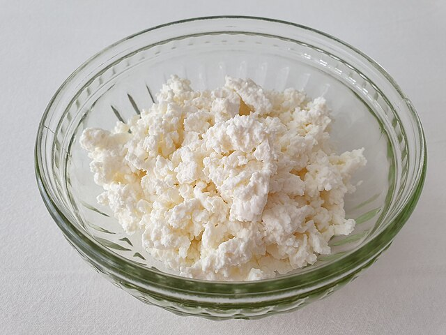
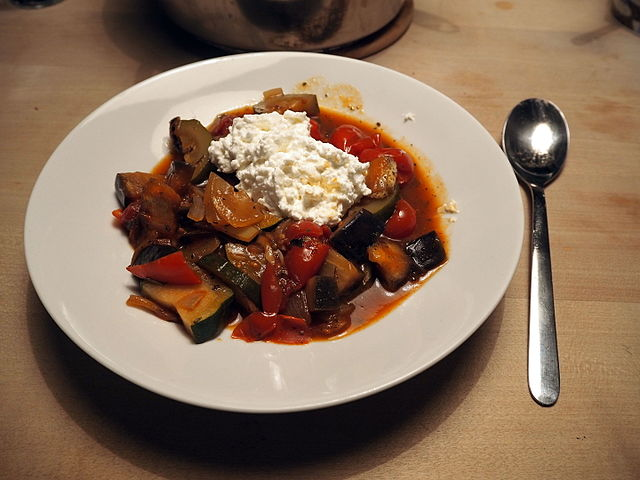
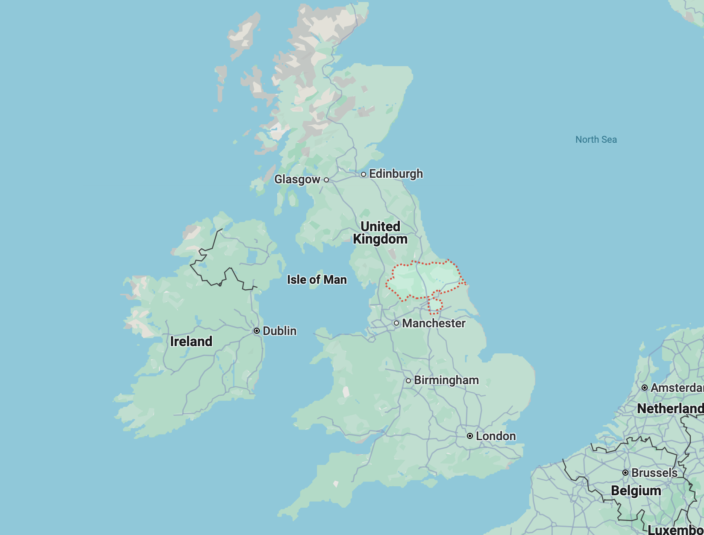

- Home
- Cheese



COTTAGE CHEESE
- Region: United Kingdom
- Milk: Cow
- Texture: Soft
Cottage cheese is a popular curd product made from cow’s milk. Similar to feta and mozzarella, the cheese is not aged and retains its moisture. It is thought that the name “cottage” comes from the fact that the cheese was originally made in farmhouses that would have excess milk. Cottage cheese is a popular ingredient that is used for dishes such as yogurt, salads and toast.
More InfoRECOMMENDED

Gorgonzola

Edam

Camembert